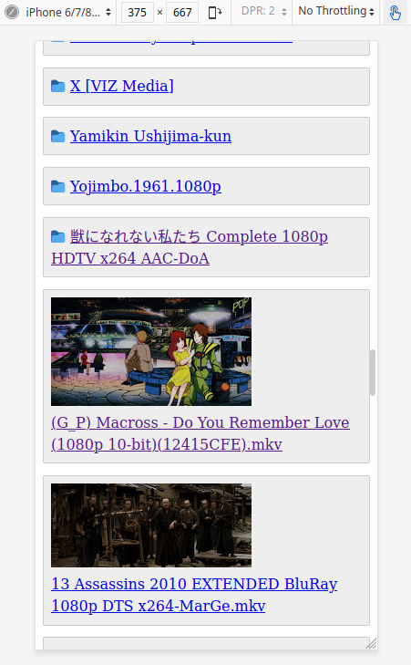

Streaming videos from Google Drive: a second attempt
TL;DR: I improved the Google Drive video streaming experience mentioned in an earlier blog post. It now works like this on an Android phone with mpv-android installed:
The longer version follows.
Previously I was writing a proxy of sorts that adapted Google Drive’s “bearer token” auth to the more widely supported “basic auth” so I could watch movies. I was stuck at the point where desktop video players could stream just fine while their android ports would do nothing.
Turns out it was a TLS issue: I configured nginx to use TLSv1.3 which is the
latest and greatest, but mpv/vlc on android came bundled with older TLS
libraries which only supported up to v1.2. This led me to another surprise: the
nginx config generated by Mozilla’s SSL Configuration Generator, while
advertised to support older TLSes (in either Intermediate or Old mode),
didn’t actually work in practice. SSL tests always reported that the only
working SSL/TLS protocol was TLSv1.3.
I pinpointed this issue from reading the android device’s logcat output. Did you know that in order to read logcat you only need to install some 8MiB package instead of the whole Android Studio behemoth? I do now!
As luck would have it, Caddy v2 was recently released and they even provided a Debian repo! I had used Caddy v1 in the past but my impression was that despite their pitch of a “download and run” experience, actual extra work was required - it was straightforward and well-documented, but it was still extra busywork. This combined with the hassle of having to compile my own binary bounced me back to nginx. Both of these issues have been addressed in v2, so there’s really no reason to keep wrestling with nginx + certbot anymore.
On that note, to this day I still haven’t figured out how to make the nginx/certbot combo play nice with ansible. Problem is, certbot’s nginx plugin wants to mutate the nginx config file itself, so the nginx configs before vs after certbot runs are decidedly different. This requires ridiculous gymnastics to mold into an ansible play - and don’t even get me started on multi-site setups. A Caddyfile, on the other hand, simply gets out of your way.
Now that TLS is settled, I also made some changes to the usage flow:
Authentication
The authentication responsibility has been moved from nginx/caddy to the python application itself to enable more fine-grained control:
Every route, except for the video-serving /v/*, requires a user_token cookie.
If it doesn’t exist, redirect to /login, which will let user submit a
password in order to get the user token back. User token is a 128-byte string
that’s regenerated every time the python script restarts. I should probably
write a janitor script to periodically regenerate it instead.
When user navigates to a video, a unique 128-byte slug is generated just for it
and the video can now be directly streamed at /v/<slug>, with no
authentication required. Currently slugs older than 1 day are wiped on python
application startup, but then, like user token, I should probably stop relying
on the script restarting to do cleanup operations.
With this setup I can freely share the /v/<slug> url to other people without
leaking any auth credentials, and they eventually expire too. There’s tuning to
be done for expiration mechanisms but the foundations are there.
Aesthetics
The web interface has been revamped to make it easier for fat-fingered
people on $current_year’s trendy stupidly thin phones. Also present
are folder icons and thumbnails, so it finally gives me everything I want from
Google Drive’s web UI and nothing that I don’t. Fun fact: it works on
NetSurf too (but then again why wouldn’t it?).

What’s the catch?
Client device is solely responsible for decoding the raw file. This is both a blessing and a curse: We are guaranteed original quality but if the file was encoded with newer codecs (h265, av1, etc.) we’re stuck with inefficient software decoding and some devices are just too weak to do so smoothly. My Amazon Fire HD 10 tablet suffers greatly when playing 1080p 10bit anime. Curiously, my crappy Mi A3 phone yields better performance, although stutters still happen here and there. More modest h264 movies play flawlessly, for what it’s worth.
This is a proof of concept and the codebase quality reflects that. I’m in the middle of cleaning it up for pypi friendliness and xdg compliance, but currently stuck when porting from std’s http server to bottlepy. The current dirty codebase is working fine for me so I’m in no hurry though…
In conclusion
I’m happy with how things turned out: I have zero-maintenance unlimited cloud storage for movies and an effortless streaming experience that requires virtually no client-side setup - just install a browser and streaming-capable video player, then everything works out of the box. This is almost as convenient as Netflix, but without the stupid quality restriction on non-sanctioned devices. I probably need to upgrade to a beefier tablet though.
Here's every post in The movie streaming saga, in chronological order: